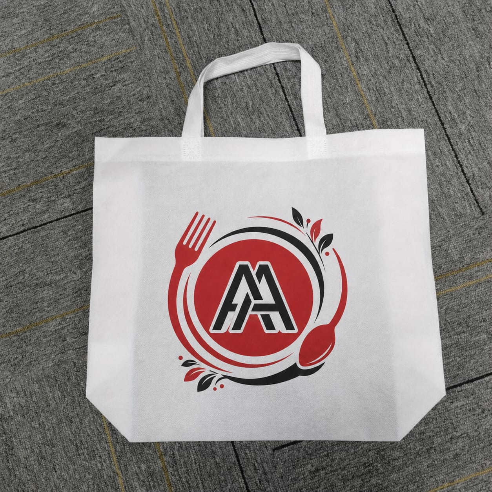
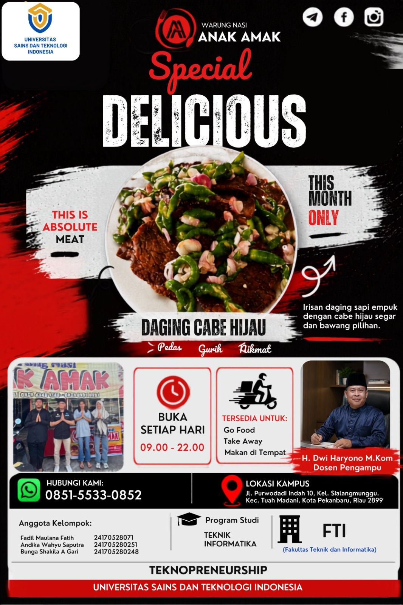

Pengembangan produk ramah lingkungan inovatif dan media promosi visual terintegrasi hasil kerja kelompok kepada masyarakat.

Dalam rangka memenuhi proyek implementasi nyata bagi masyarakat, kelompok kami merancang dan mengembangkan produk fungsional ramah lingkungan yang dipadukan dengan strategi *branding* visual yang kuat melalui poster promosi digital dan konsep media video marketing yang energik.
Produk utama yang dikembangkan adalah **Tote Bag ramah lingkungan** berbahan dasar kain *non-woven* berkualitas tinggi berwarna putih bersih. Desain diperkuat dengan penempatan logo eksklusif **"AA"** di bagian tengah tas untuk membangun identitas produk (*branding*) yang minimalis namun ikonik.
Untuk mengenalkan produk ini secara luas, kami menyusun materi publikasi kreatif berupa cetakan **Poster Resmi** serta rancangan video promosi berdurasi 15-20 detik. Pendekatan visual yang digunakan berfokus pada estetika modern, bersih, dengan menyisipkan aksen latar belakang tekstur alami dan grafis dinamis agar menarik minat generasi muda.

Poster Resmi Promosi Digital "Warung Nasi Anak Amak"
Teknopreneurship • Universitas Sains dan Teknologi Indonesia